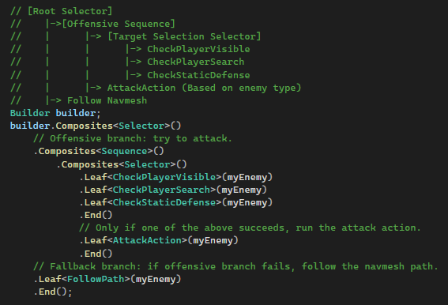

My enemy AI is built around a Behavior Tree system that handles decision-making for all enemy types. For movement, I rely on a variety of Steering Behaviors to create smooth and dynamic motion across the environment.
Steering Behaviors
Aside from classic Seek, Arrival, and Separation, I’ve implemented three custom steering techniques that improve AI movement:
Object Separation Steering
This behavior uses a series of short rays cast in fixed directions from the enemy. These rays interact only with the environment, not other enemies. The closer a ray hits an object, the stronger the steering force is applied away from it using a lerped weighting system. This helps enemies avoid walls and tight spaces more naturally.
Navmesh Edge Steering
Ground enemies are nudged back toward the navmesh path if they start drifting. This is made efficient through a gridded navmesh layout, allowing enemies to quickly check if they're veering off course and stay aligned with the walkable areas.
Spread Steering
This behavior ensures that enemies don't stack in a straight line by applying horizontal and vertical spacing between them. It creates more natural formation movement and reduces crowding.
Seek Steering
Seek behavior is used to move toward the next pathfinding point. Once close enough to the target, the enemy increments to the next point in the path.
Enemy Types
Ground Enemies
Ground units stay grounded using PhysX, sampling the Y-position from the terrain below. If the player is in their path to the defense target, they lunge to bite. When close to the defense point, they perform a final lunge to damage the target, sacrificing themselves in the process.


Flying Shooter
This enemy type uses a projectile pool and fires in a 5-shot burst, alternating between left and right shots. If it sees the player or a defense target, it engages immediately. If the player hides, it searches the last known location for a limited time before resuming its path toward the defense point.


Flying Kamikaze
A drone-type enemy that seeks out the player or a defense point and explodes on impact. It uses the same visibility system as the shooter to determine when to engage.


Enemy Management
Wave Manager
All enemies are controlled by a centralized WaveManager, which manages an EnemyPool based on the largest possible wave defined by our level designers’ generated bin files. This ensures maximum reuse and efficiency.
Debugging Tools
I’ve implemented several tools to help visualize and debug enemy behavior in real-time:

Debug view of Ground Enemy

Object Separation Steering in use with debug rays
All Steering Ray presets added
Path Rendering
Displays each enemy’s current path and next target waypoint.
Velocity Vectors
Shows the direction and magnitude of each enemy’s movement.
Steering Rays
Visualizes Object Separation rays. Penetration depth is color-coded — the part penetrating a collider changes color.
Parameter Tweaking
I can dynamically adjust: Steering weights, Arrival/Separation radius, Mass, Speed, and Max Force.
Ray Presets
I can add or swap steering ray configurations on the fly using defined presets.
Behavior Tree
All enemies use a simple Behavior Tree to make decisions based on their current situation. This tree handles targeting, attacking, and fallback behaviors depending on what the enemy sees or senses.
Player Visibility Check
The tree first checks if the player is visible. If true, the enemy transitions into an attack behavior using a lunge, shooting, or explosion depending on the enemy type.
Static Defense Targeting
If the player isn’t visible, the enemy checks for nearby static defense targets. If one is present, the enemy attacks the structure instead.
Path Following
If neither the player nor a defense target is visible, the enemy follows its navmesh path using steering behaviors until re-engaging.
Structure
The Behavior Tree is built using a Selector at the root, which evaluates child Sequences in order. Each Sequence contains specific conditions and corresponding actions, ensuring simple but responsive decision-making.
